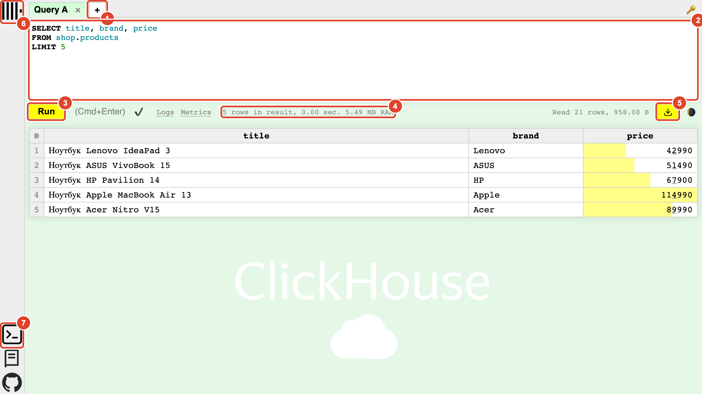
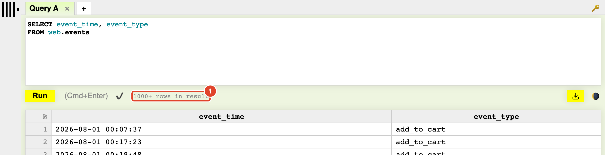
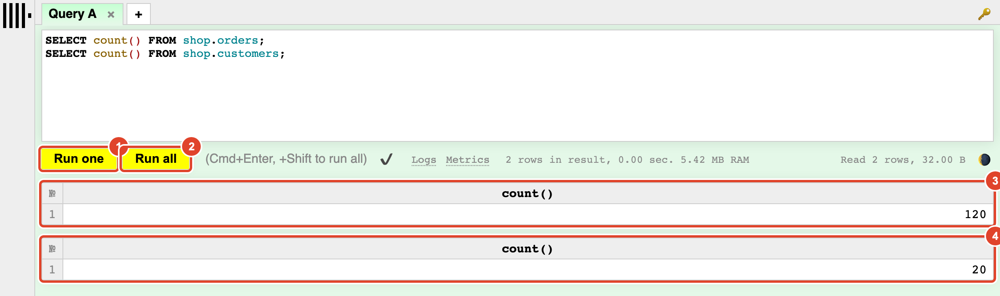
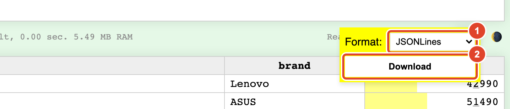
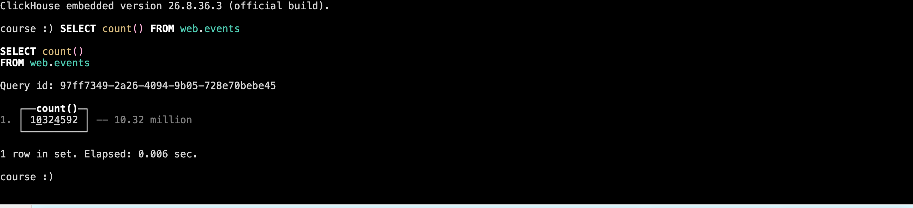

Справочник по ClickHouse · модуль 0 · рабочее место
Глава 0.2
Клиенты:
Play UI и clickhouse-client
Запросы к серверу можно отправлять тремя способами: из редактора в браузере, из терминала в том же браузере и из обычного терминала. Разберём, чем они отличаются и где каждый удобнее.
- Категория
- Подготовка рабочего места
- Уровень
- Начальный
- Связанные темы
- 0.1 Стенд · 1.1 Сервер, база, таблица
- Понадобится
- поднятый стенд из главы 0.1
Суть за две минуты
Play UI, веб-терминал и clickhouse-client — разные окна к одному серверу и одним данным.
Ответ на запрос везде одинаковый.
Таблица с полосками, вкладки, скачивание результата. Показывает до 1000 строк.
Запуск — Ctrl + Enter, на Mac Cmd + Enter.
Каждая строка уходит на сервер отдельным запросом.
Длинный запрос пишут в одну строку или включают режим -m.
§1Три окна к одному серверу
Зачем это знатьЧтобы не путаться: окна разные, а сервер и данные одни. Запрос, который сработал в одном окне, сработает и в другом.
Браузер ходит к серверу через порт 8123, клиент в терминале — через 9000. Оба порта ведут в один контейнер, это видно в главе 0.1.
три окна на примере библиотеки
Play UI
Читальный залБольшой стол: разложить ответ, сравнить, выписать в файл.терминал
Окно выдачиНазвали книгу — получили. Быстро, но без стола.сервер
Одно хранилищеКниги одни и те же, через какое окно ни проси.Что есть что: читальный зал — Play UI с таблицей и скачиванием; окно выдачи — веб-терминал и clickhouse-client; хранилище — сервер со стендовыми базами.
§2Карта Play UI
Зачем это знатьБольшинство запросов из глав выполняют здесь. Запомним, где что лежит.
Откройте localhost:8123/play, войдите как student / student и выполните запрос:
SELECT title, brand, price FROM shop.products LIMIT 5

пишем
2 · редакторЗапрос можно писать в несколько строк.отправляем
3 · RunCtrl + Enter, на Mac Cmd + Enterчитаем
4 · итог и таблицаСколько строк вернулось и за сколько секунд.под кнопкой Run написано 5 rows in result, а в таблице пять товаров.
остальные кнопки на кадре
- 1 · «+» — новая вкладка со своим запросом. Вкладки и их запросы браузер сохраняет: после перезагрузки страницы они на месте.
- 5 · скачать — результат файлом, разбор в §5.
- 6 · базы и таблицы — список слева, как на кадрах главы 0.1.
- 7 · веб-терминал — разбор в §6.
- Logs и Metrics рядом с итогом — журнал сервера и счётчики для запроса.
- Read 21 rows справа — сколько строк сервер прочитал. Таблица маленькая, поэтому он прочитал её целиком, а вернул пять.
- Полоски в числовом столбце Play UI рисует сам: чем больше число, тем длиннее полоска.
Текст запроса Play UI записывает в адрес страницы после знака #. Скопированный адрес откроет тот же запрос в другом окне.
§3Большие таблицы: 1000 строк
Зачем это знатьВ web.events десять миллионов строк. Браузер столько не покажет — Play UI останавливается на тысяче.
SELECT event_time, event_type FROM web.events

Плюс после числа значит: строк больше, чем на экране. Play UI показал первую тысячу и перестал читать ответ.
для просмотра больших таблиц в конце запроса стоит LIMIT 10 или другое небольшое число.
§4Несколько запросов сразу
Зачем это знатьВ упражнениях часто нужно выполнить два-три запроса подряд. Не обязательно стирать и вставлять их по одному.
Напишите запросы в одном поле и закончите каждый точкой с запятой. Кнопка Run разделится на две:
SELECT count() FROM shop.orders; SELECT count() FROM shop.customers;

1 · Run one
один запростот, где стоит курсор · Ctrl + Enter2 · Run all
все по очередикаждый результат — своя таблица · добавьте Shiftпод кнопками две таблицы: 120 заказов и 20 покупателей.
почему USE в Play UI не работает
Каждый запуск в Play UI — отдельное обращение к серверу. Команда USE shop выбирает базу только для своего обращения, а следующий запрос выполняется уже без неё:
Code: 60. DB::Exception: Unknown table expression identifier 'products' in scope SELECT count() FROM products. Maybe you meant shop.products?. (UNKNOWN_TABLE) (version 26.8.36.3 (official build))
Поэтому в Play UI имя таблицы пишут вместе с базой: shop.products. Подробнее о USE — в главе 1.1.
§5Забрать результат файлом
Зачем это знатьРезультат бывает нужен в отчёте или в Excel. Play UI сохраняет его файлом в нужном формате.
Делаем- Нажмите кнопку скачиванияЗначок со стрелкой вниз справа от итога (5 на карте экрана).
- Выберите формат и нажмите Download

Play UI · меню скачивания: 1 — формат, 2 — Download
CSVWithNames
для Excelзначения через запятую, первая строка — названия столбцовJSON · JSONLines
для программJSONLines — по объекту на строку, выбран сразуMarkdown
для отчётаготовая таблица для текстав папке «Загрузки» появился файл с пятью товарами.
все форматы меню
В списке: CSV, CSVWithNames, TSV, JSON, JSONLines, Parquet, Markdown и Other — там можно вписать любой формат ClickHouse. Для скачивания Play UI выполняет запрос заново, поэтому в файл попадает весь результат, даже если на экране была только первая тысяча строк.
§6Веб-терминал в Play UI
Зачем это знатьТерминал прямо в браузере: ничего не нужно запускать в PowerShell или Терминале. Выручает, если команда docker compose exec не получается.
Нажмите значок терминала внизу слева (7 на карте экрана). Сверху откроется чёрная панель с приглашением course :). Наберите запрос и нажмите Enter:

Веб-терминал работает так же, как clickhouse-client в обычном терминале: Enter сразу отправляет строку на сервер.
после запроса напечатано 10324592 и время Elapsed.
§7clickhouse-client: Enter отправляет
Зачем это знатьЗдесь чаще всего ошибаются в первый раз. Запрос, набранный в несколько строк, ломается на куски.
Откройте клиент, как в главе 0.1:
docker compose exec clickhouse clickhouse-client
В Play UI Enter переносит строку. В клиенте Enter сразу отправляет строку на сервер. Попробуем набрать запрос в три строки:
строка 1 · Enter
SELECT title, priceушла одна: нет FROM — ошибкастрока 2 · Enter
FROM shop.productsушла одна: вернула всю таблицу, 21 строкустрока 3 · Enter
ORDER BY price DESC LIMIT 3;ушла одна: синтаксическая ошибкачто напечатал клиент на каждую строку
course :) SELECT title, price … Code: 47. DB::Exception: Received from localhost:9000. DB::Exception: Unknown expression identifier `title` in scope SELECT title, price: Note: the query does not have the FROM clause. Did you forget to add it?. (UNKNOWN_IDENTIFIER) course :) FROM shop.products SELECT * FROM shop.products … 21 rows in set. Elapsed: 0.004 sec. course :) ORDER BY price DESC LIMIT 3; Syntax error: failed at position 1 (ORDER):
Вторая строка сработала неожиданно: ClickHouse разрешает начать запрос с FROM и тогда достраивает SELECT * — это видно в повторе запроса.
Выхода два. Короткий запрос пишут в одну строку. Для длинного запускают клиент с флагом -m — «многострочный режим». Тогда Enter переносит строку, а запрос уходит на сервер, когда строка кончается точкой с запятой:
docker compose exec clickhouse clickhouse-client -m
course :) SELECT title, price
FROM shop.products
ORDER BY price DESC LIMIT 3;
SELECT
title,
price
FROM shop.products
ORDER BY price DESC
LIMIT 3
Query id: 6cebe9a8-8707-4616-8403-f693dc76ee3f
┌─title────────────────────────┬──price─┐
1. │ Ноутбук Apple MacBook Air 13 │ 114990 │
2. │ Ноутбук Acer Nitro V15 │ 89990 │
3. │ Смартфон Apple iPhone 15 │ 79990 │
└──────────────────────────────┴────────┘
3 rows in set. Elapsed: 0.009 sec.три строки ушли одним запросом, и клиент вернул три самых дорогих товара.
удобства клиента: история, вертикальный вывод, выход
- Стрелки ↑ и ↓ листают прошлые запросы.
\Gв конце запроса вместо;печатает каждую строку столбиком «поле: значение». Так легче читать строку, когда столбцов много. Подробнее — в главе 1.1.exitили Ctrl + D — выйти из клиента. Сервер продолжает работать.
§8Запрос без входа в клиент
Зачем это знатьИногда нужен один ответ: проверить число или сохранить результат в файл. Входить в клиент ради этого не обязательно.
Флаг -q выполняет один запрос и сразу выходит. Флаг -f выбирает, как напечатать ответ. Один и тот же запрос в трёх форматах:
docker compose exec clickhouse clickhouse-client -q "SELECT title, price FROM shop.products ORDER BY price DESC LIMIT 3"
без -f
TabSeparatedзначения через табуляцию, без рамки — для других программ-f PrettyCompact
таблица в рамкекак в интерактивном клиенте — для чтения глазами-f CSVWithNames
CSV с заголовкомдля Excel и файловкак выглядит ответ в каждом формате
Ноутбук Apple MacBook Air 13 114990 Ноутбук Acer Nitro V15 89990 Смартфон Apple iPhone 15 79990
┌─title────────────────────────┬──price─┐ 1. │ Ноутбук Apple MacBook Air 13 │ 114990 │ 2. │ Ноутбук Acer Nitro V15 │ 89990 │ 3. │ Смартфон Apple iPhone 15 │ 79990 │ └──────────────────────────────┴────────┘
"title","price" "Ноутбук Apple MacBook Air 13",114990 "Ноутбук Acer Nitro V15",89990 "Смартфон Apple iPhone 15",79990
Чтобы сохранить ответ в файл, допишите в конце команды > top3.csv. Флаг -T после exec говорит Docker не открывать интерактивный терминал: для записи в файл он не нужен.
docker compose exec -T clickhouse clickhouse-client -q "SELECT title, price FROM shop.products ORDER BY price DESC LIMIT 3" -f CSVWithNames > top3.csv
§9Что когда выбирать
Play UIПочти все запросы книги: видно таблицу, можно скачать файл.
веб-терминалНужен клиент, а запускать команды в терминале не хочется.
clickhouse-clientДлинные сеансы, история запросов, ответ сразу в файл.
§10Если не получилось
Запрос в несколько строк в клиентеNote: the query does not have the FROM clause. Did you forget to add it?. (UNKNOWN_IDENTIFIER)
Клиент отправил первую строку отдельно. Наберите запрос в одну строку или запустите клиент с -m и закончите запрос точкой с запятой — §7.
Таблица без базы в Play UIUnknown table expression identifier 'products' … Maybe you meant shop.products?. (UNKNOWN_TABLE)
Play UI не помнит USE между запусками. Пишите имя с базой: shop.products — §4.
Строк меньше, чем ожидали1000+ rows in result
Play UI показывает не больше тысячи строк. Добавьте LIMIT или скачайте результат файлом — §3, §5.
Клиент не запускаетсяservice "clickhouse" is not running
Стенд остановлен. Выполните docker compose up -d из папки репозитория.
Неверный парольAuthentication failed: password is incorrect, or there is no user with such name. (AUTHENTICATION_FAILED)
Пользователь и пароль — student строчными латинскими буквами. Кадр ошибки — в главе 0.1.
§11Проверьте себя
Почему в clickhouse-client запрос в три строки дал две ошибки?
Без флага -m каждое нажатие Enter отправляет строку на сервер. Три строки стали тремя отдельными запросами: в первом нет FROM, третий начинается с ORDER BY.
Как выполнить два запроса в Play UI одним нажатием?
Написать их в одном поле через точку с запятой и нажать Run all или Ctrl + Shift + Enter. Каждый результат будет отдельной таблицей.
Play UI написал «1000+ rows in result». Как получить все строки?
Скачать результат кнопкой со стрелкой вниз: в файл попадает весь ответ. Для просмотра глазами лучше сузить запрос через LIMIT.
§12Шпаргалка
localhost:8123/play student / student
Ctrl+Enter выполнить
Ctrl+Shift+Enter выполнить все
docker compose exec clickhouse clickhouse-client
-m запрос до «;»
exit выйти
… clickhouse-client -q "SELECT …"
-f PrettyCompact таблица
-f CSVWithNames CSV
Итог главы
- Play UI, веб-терминал и clickhouse-client — три окна к одному серверу.
- В Play UI видно до 1000 строк. Несколько запросов выполняет Run all, весь результат сохраняет кнопка скачивания.
- В клиенте Enter сразу отправляет строку. Для длинных запросов — флаг
-mи точка с запятой в конце. -qвыполняет один запрос без входа в клиент,-fвыбирает формат ответа.